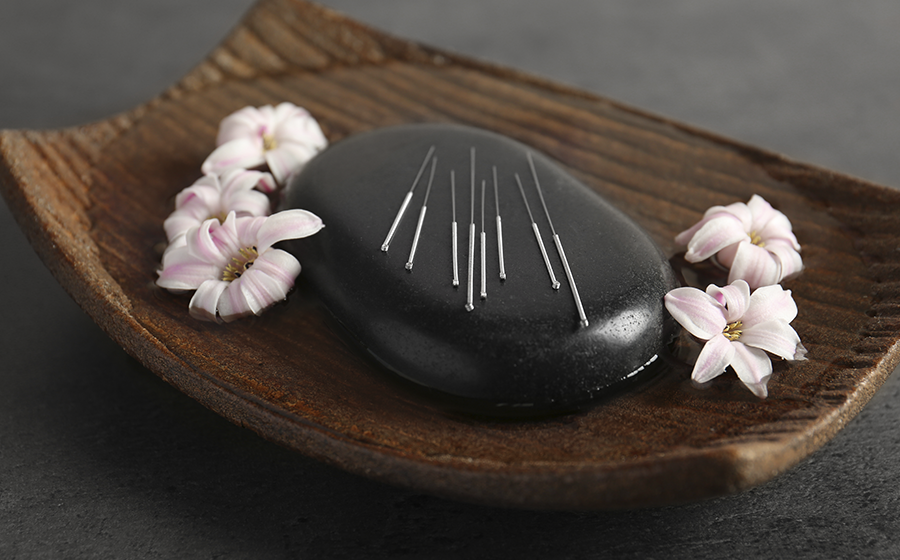

PORTFOLIO
Acupuntura
O Que é Acupuntura?
A acupuntura é uma prática milenar da medicina tradicional chinesa que envolve a inserção de agulhas finas em pontos específicos do corpo, conhecidos como pontos de acupuntura. Esses pontos estão localizados ao longo de meridianos, que são canais de energia que percorrem o corpo. A acupuntura visa equilibrar o fluxo de energia vital (Qi) e tratar diversas condições de saúde, como dores crônicas, problemas digestivos e distúrbios emocionais.
SAIBA MAIS!Como Funciona a Acupuntura?
Durante uma sessão de acupuntura, o profissional insere agulhas muito finas em pontos específicos do corpo. Essas agulhas são deixadas no local por cerca de 20 a 30 minutos, enquanto o paciente relaxa. A estimulação desses pontos ajuda a liberar endorfinas e outras substâncias naturais que promovem o bem-estar e aliviam a dor.
Projeto
“Acupuntura Inclusiva”
O projeto “Acupuntura Inclusiva” busca democratizar o acesso a essa prática terapêutica, tornando-a disponível para todas as pessoas, independentemente de suas condições socioeconômicas. Integrado ao Sistema Único de Saúde (SUS) através da Política Nacional de Práticas Integrativas e Complementares (PNPIC), o projeto visa oferecer tratamentos de acupuntura gratuitos em unidades de saúde pública. Objetivos do Projeto é garantir que pessoas de baixa renda tenham acesso a tratamentos de acupuntura, Oferecer uma variedade de tratamentos para diferentes condições de saúde e Tratar o paciente de forma holística, promovendo o bem-estar geral.

Benefícios da Acupuntura
A acupuntura é amplamente reconhecida por seus benefícios no alívio de dores e no tratamento de várias condições, tais como:
• Dores crônicas: lombar, cervical, artrite e enxaqueca.
• Problemas digestivos: náuseas, vômitos e gastrite.
• Distúrbios emocionais: ansiedade, estresse e depressão.
• Saúde geral: melhora do sono, fortalecimento do sistema imunológico e aumento da vitalidade.
Tipos de Acupuntura
Existem diferentes técnicas de acupuntura, cada uma com suas particularidades:
• Acupuntura Tradicional: Utiliza agulhas finas em pontos específicos do corpo.
• Auriculoterapia: Foca em pontos na orelha para tratar diversas condições.
• Ventosaterapia: Utiliza ventosas para criar sucção na pele, promovendo a circulação sanguínea1.
Relatos de casos
“
Maria, 45 anos Condição: Dor lombar crônica Tratamento: Maria sofria de dor lombar crônica há mais de 10 anos. Após iniciar o tratamento com acupuntura inclusiva, ela relatou uma redução significativa na dor após apenas cinco sessões. Com a continuidade do tratamento, Maria conseguiu retomar suas atividades diárias sem a necessidade de analgésicos.
“
João, 50 anos Condição: Insônia Tratamento: João enfrentava dificuldades para dormir há vários anos. Através do projeto de acupuntura inclusiva, ele começou a receber sessões semanais de acupuntura. Após um mês de tratamento, João relatou uma melhora significativa na qualidade do sono, conseguindo dormir por períodos mais longos e com menos interrupções.
O projeto “Acupuntura Inclusiva” depende de doações para continuar oferecendo tratamentos de acupuntura gratuitos e acessíveis a todos. Sua contribuição pode fazer uma grande diferença na vida de muitas pessoas.
Clique Para Ajudar!Entre em contato
Endereço
123 Anywhere St., Any City, State, Country 12345
Telefone
(123) 456 7890
hello@reallygreatsite.com